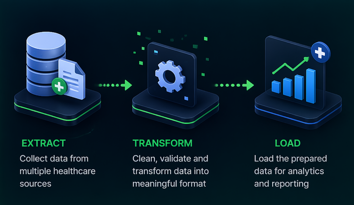

FHIR ETL Pipeline
FHIR ETL Pipeline: Bridging Clinical Data Systems
This project demonstrates the design and implementation of a healthcare ETL (Extract, Transform, Load) pipeline using FHIR APIs. The system extracts patient and clinical data from OpenEMR, transforms it using SNOMED CT terminology for standardization, and loads it into a Primary Care EHR system. The pipeline also supports interoperability with legacy systems by converting FHIR data into HL7 v2 message format, ensuring seamless data exchange across modern and traditional healthcare platforms.

Purpose of the ETL Pipeline
The purpose of this project is to enable seamless healthcare data interoperability between systems. The ETL pipeline extracts patient and clinical data from a source FHIR server (OpenEMR), transforms the data using standardized clinical terminology (SNOMED CT), and loads it into a target FHIR server (Primary Care EHR).
Key Tools and Technologies
| Tool / Technology | Role in the Project |
|---|---|
| Python | Core scripting language for ETL tasks |
| Requests Library | Handles API communication |
| OpenEMR FHIR API | Source system |
| Primary Care EHR FHIR API | Target system |
| SNOMED CT | Clinical terminology mapping |
| HL7 v2 | Legacy interoperability |
| HL7apy | HL7 message generation |
| GitHub Pages | Website hosting |

📋
Summary of Deliverables
💻
5 Coding Tasks
Parent, Child, BP, Procedure, HL7
✅
FHIR Validation
Standard Profiles
📄
HL7 v2 Message
Exported as .txt
🌐
Documentation Website
Hosted on GitHub Pages